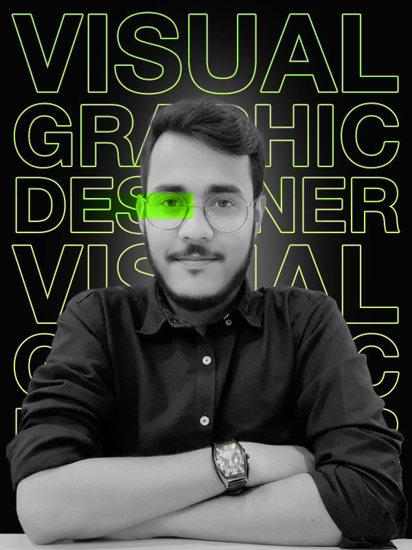

I am a Communication Designer operating at the intersection of artistic campaigns and technical prepress production in Karachi. My journey into visual storytelling began with my Bachelor's degree in Communication Design from the University of Sindh, which laid the rigorous creative foundation I rely on today.
While I spend my days ensuring pinpoint accuracy for multinational FMCG packaging lines, I spend my nights navigating the global freelance market. As a top-rated freelancer on Fiverr, I've had the privilege of building brand identities and 360° creative campaigns for clients all over the world.
Beyond the screen and the printing press, my eye for composition extends to commercial photography, constantly looking for new ways to capture light and narrative. Looking forward, I am deeply invested in the future of our industry, specifically, how AI and automation can be engineered to revolutionize graphic design workflows and scale creative output without losing the human touch.
05+
Years Experience100%
Prepress AccuracyGlobal
Freelance Reach